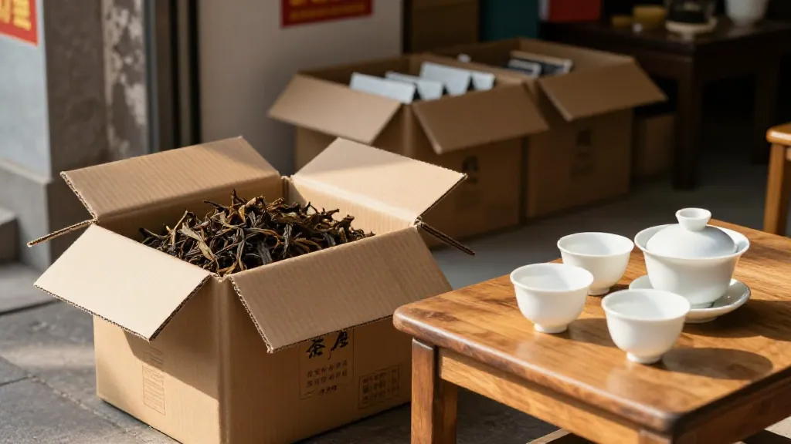

40 斤秋茶从凤凰山下来，同一天被酒楼、奶茶店、企业礼盒分走——阿凤姐把同一批茶拆成三种喝法。
【场景开头】
10 月 8 号早七点半，惠州东湖花园沿江路刚醒。阿凤姐蹲店门口拆箱，40 斤秋茶从凤凰山下来，纸箱一开蜜兰香直窜，隔壁凉果档阿嫂喊：「凤姐，你一开箱，整条街都闻饱了！」话音没落，酒楼陈老板、奶茶店小美前后脚到，约好同一天拿秋茶。
【第一幕：引茶】
陈老板拍纸箱：「凤姐，我酒楼茶位 12 块一位，一天两三斤，要稳。」小美拎着量杯：「我要茶底，香要扬，加奶不能浑。」做礼盒的张先生比画空盒：「企业单要高山料，讲得出山头。」阿凤姐各倒一杯样茶：「巧了，同一批秋茶，你们要的是三种喝法，今天拆开讲。」
【第二幕：泡茶】
盖碗烫过，称茶 9 克，小烤炉提香 5 分钟，花香一出小美就点头。100 度高冲，第一泡洗茶倒掉。阿凤姐拨通山上阿武的电话按免提：「这批中段清晨料，焙三遍，火退透了。下午料香短，便宜 15% 我也没要。」陈老板笑：「源头还挺犟。」阿凤姐说：「犟才稳，不犟做不出一年不变味的口粮。」
【第三幕：品茶】
第二泡汤色透亮如琥珀。陈老板喝：「干净，配白切鸡不抢味，茶位就用它。」小美尝完摇头：「直接做底可惜，成本也压不住。」阿凤姐拼三成春尾再泡一杯：「再试——三成春尾提香，七成秋中段保顺滑，加奶奶白不浑，两段感就有了。」小美眼睛亮了：「定价 18 到 22 块，毛利比纯奶茶高。」张先生那 5 斤高山清晨料单独包：「配山头卡，企业单才敢拍胸脯。」
【第四幕：点题】
张先生翻出张民国茶引老照片：「以前贩茶凭茶引盖印，现在你一个视频电话就留住清晨料。」阿凤姐笑：「工具变理没变。我是翻译，把山头话译成你们能赚钱的话。你们赚到了，阿武明年才把最好的先留我。一环断，全链散。」陈老板拍腿：「去年我图便宜换厂，客人说像喝洗锅水，便宜的链迟早断在嘴里。」
【尾声】
一上午，20 斤口粮、15 斤拼配底、5 斤高山料分完，40 斤见底。阿武又发语音：「乌岽老丛只做 5 斤，给你留着。」阿凤姐回个「留住」，转头问三人：「七八十年老树，香都沉了，这茶该怎么分，你们猜？」